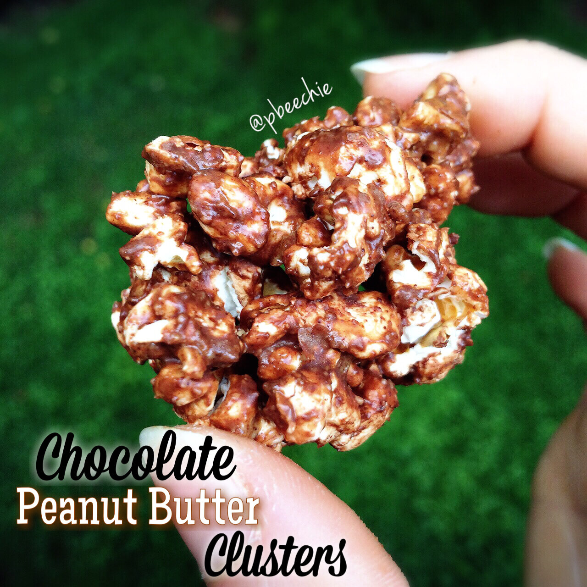

Chocolate Peanut Butter Clusters
I made these chocolate peanut butter popcorn clusters to snack on! Sugar free with hidden protein heyooo. Does this make it a balanced meal :D? Taking a week off from lifting because my body's been breaking for a month I swear. I'll finally rest forreal I guess + some sauna. Sooo that means baking and eating and cooking and food and eating #food #freetime. I have already taken 3 days off; while I feel a little less like death...I still feel so unrested and tired and a lot like death still. This has kind of been going on for a 4-6 weeks now. My training has had to decline to 4 days a week because pretty much every week for a month I take extra rest without planning to... My ankles feel like they're going to snap and they're sensitive to touch. My lower back and neck is also sensitive to touch. My hips are also always ridiculously tight and sore. I've been getting headaches and I also phase out a lot... It's so bizarre and I know it's not from my diet. I've been eating like I always do....? I thought? It reminds me of when I underate and felt like death. Except, ya know, I'm not undereating... At least my skin/hair is fine. Idk. I have a doctors appointment next week. Fingers crossed. Rest for now because I will admit, I'm awful with resting. In the last 3 years, the max I've rested was 4 days straight, once. Everything else has been 3 days or less. Idk. Going for 5 this time. I'm breaking so hard I don't even feel guilt. It feels so good. 
- 3 cups of popped popcorn (I used Live Love Pop, it's non gmo, 3 ingredients, and all natural)
- 3 TBSP of Manbake brand protein cookie butter (or normal peanut butter)
- 1 bar of sugar free Amberlyn Chocolates
Mix the popcorn and nut butter in a bowl until mostly evenly stirred together. Then melt the bar of sugar free chocolate (this stuff is actually delicious... I thought it'd be awful like every other sugar free chocolate but no. It's incredible). I melted mine by microwaving in increments. Pour into the popcorn/pb bowl and lightly incorporate it in the mixture. Use a spoon to form into clusters and place on wax paper. Freeze for 10-15 minutes to set. Then enjoy!